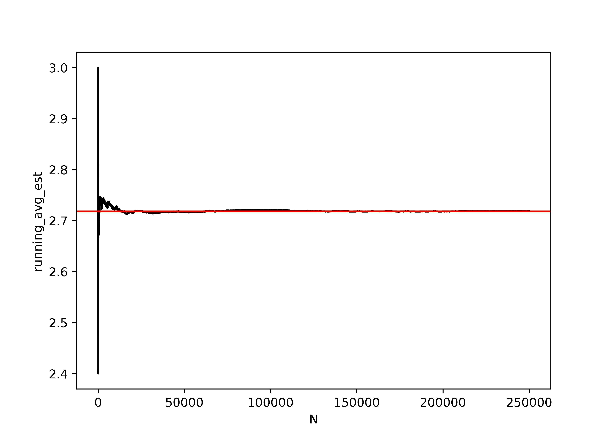

set.seed(342512)
# Get 10 numbers after the seed is set
sample(1:100, 10)
## [1] 65 51 64 21 45 53 3 6 43 8
# Compute something else that depends on randomness
mean(rnorm(50))
## [1] -0.1095366
# Get 10 more numbers
sample(1:100, 10)
## [1] 4 57 69 10 76 15 67 1 3 9129 Simulation and Reproducibility
29.1 Objectives
- Program a simulation for a specific task, process, or model
- Understand the limitaitons of pseudorandom number generation
Simulation is an extremely important part of computational statistics. Bayesian statistics, in particular, relies on Markov Chain Monte Carlo (MCMC) to get results from even the most basic of models. In this module, we’re going to touch on a few foundational pieces of simulation in computing, and you will get more exposure to simulation-based methods in other courses down the line.
29.2 Pseudorandom Number Generation
Computers are almost entirely deterministic, which makes it very difficult to come up with “random” numbers. In addition to the deterministic nature of computing, it’s also somewhat important to be able to run the same code and get the same results every time, which isn’t possible if you rely on truly random numbers.
Historically, pseudorandom numbers were generated using linear congruential generators (LCGs) [1]. These algorithms aren’t typically used anymore, but they provide a good demonstration of how one might go about generating numbers that seem “random” but are actually deterministic. LCGs use modular arithmetic: \[X_{n+1} = (aX_n + c) \mod m\] where \(X_0\) is the start value (the seed), \(a\) is the multiplier, \(c\) is the increment, and \(m\) is the modulus. When using a LCG, the user generally specifies only the seed.

The important thing to note here is that if you specify the same generator values (\(a\), \(c\), \(m\), and \(X_0\)), you will always get the same series of numbers. Since \(a\), \(c\), \(m\) are usually specified by the implementation, as a user, you should expect that if you specify the same seed, you will get the same results, every time.
Warning
It is critically important to set your seed if you want the results to be reproducible and you are using an algorithm that depends on randomness.
Once you set your seed, the remaining results will only be reproducible if you generate the same set of random numbers every time.
I once helped a friend fit a model for their masters thesis using Simulated Annealing (which relies on random seeds). We got brilliant results, but couldn‚Äôt ever reproduce them, because I hadn‚Äôt set the seed first and we never could figure out what the original seed was. üò≠
Example: Setting Seeds for Reproducibility
import random
import numpy as np
# Create a random generator with a specific seed
rng = np.random.default_rng(342512)
# Generate 10 integers
rng.integers(low = 1, high = 100, size = 10)
## array([18, 43, 71, 4, 35, 26, 41, 91, 42, 13])
# Generate 500 std normal draws and take the mean
np.mean(rng.standard_normal(500))
## -0.008197259441979758
# Get 10 more numbers
rng.integers(low = 1, high = 100, size = 10)
## array([33, 38, 3, 95, 3, 58, 79, 3, 77, 23])Compare the results above to these results:
set.seed(342512)
# Get 10 numbers after the seed is set
sample(1:100, 10)
## [1] 65 51 64 21 45 53 3 6 43 8
# Compute something else that depends on randomness
mean(rnorm(30))
## [1] -0.1936645
# Get 10 more numbers
sample(1:100, 10)
## [1] 49 37 6 34 9 3 100 43 7 29import random
import numpy as np
# Create a random generator with a specific seed
rng = np.random.default_rng(342512)
# Generate 10 integers
rng.integers(low = 1, high = 100, size = 10)
## array([18, 43, 71, 4, 35, 26, 41, 91, 42, 13])
# Generate 30 std normal draws and take the mean
np.mean(rng.standard_normal(30))
## 0.3016849078747997
# Get 10 more numbers
rng.integers(low = 1, high = 100, size = 10)
## array([21, 49, 21, 99, 45, 1, 56, 70, 15, 82])Notice how the results have changed?
To make my documents more reproducible, I will sometimes set a new seed at the start of an important chunk, even if I’ve already set the seed earlier. This introduces certain “fixed points” where results won’t change immediately after I’ve re-set the seed. This is particularly important when I’m generating bootstrap estimates, fitting models, or simulating data for graphics experiments.

Pick your seed in any way you want. I tend to just randomly wiggle my fingers over the number keys, but I have also heard of people using the date in yyyymmdd format, favorite people’s birthdays, the current time in hhmmss format… basically, you can use anything.
29.3 Built-in simulations from distributions
Often, we can get away with just simulating data from a known distribution. As both R and python are meant for statistical computing, this is extremely easy by design.
You can see the various distribution options using ?Distributions. In general, dxxx is the PDF/PMF, pxxx is the CDF, qxxx is the quantile function, and rxxx gives you random nubmers generated from the distribution. (xxx, obviously, is whatever distribution you’re looking to use.)
library(tibble)
library(dplyr)
library(tidyr)
library(ggplot2)
set.seed(109025879)
tibble(
norm = rnorm(500),
gamma = rgamma(500, shape = 3, scale = 1),
exp = rexp(500, rate = 1), # R uses a exp(-ax)
t = rt(500, df = 5),
chisq = rchisq(500, 5)
) %>%
pivot_longer(1:5, names_to = "dist", values_to = "value") %>%
ggplot(aes(x = value)) + geom_density() + facet_wrap(~dist, scales = "free", nrow = 1)
import random
random.seed(109025879)
import pandas as pd
import numpy as np
wide_df = pd.DataFrame({
"norm": np.random.normal(size=500),
"gamma": np.random.gamma(size=500, shape = 3, scale = 1),
"exp": np.random.exponential(size = 500, scale = 1),
"t": np.random.standard_t(df = 5, size = 500),
"chisq": np.random.chisquare(df = 5, size = 500)
})
long_df = pd.melt(wide_df, id_vars = None, var_name = "dist", value_name = "value")
from plotnine import *
(ggplot(long_df, aes(x = "value")) + geom_density() + facet_wrap("dist", scales="free", nrow = 1))
## <ggplot: (8728999788002)>
Try it out
Generate variables x and y, where x is a sequence from -10 to 10 and y is equal to \(x + \epsilon\), \(\epsilon \sim N(0, 1)\). Fit a linear regression to your simulated data (in R, lm, in Python, sklearn.linear_model’s LinearRegression).
Hint: Sample code for regression using sklearn [2].
set.seed(20572983)
data <- tibble(x = seq(-10, 10, .1),
y = x + rnorm(length(x)))
regression <- lm(y ~ x, data = data)
summary(regression)
##
## Call:
## lm(formula = y ~ x, data = data)
##
## Residuals:
## Min 1Q Median 3Q Max
## -3.14575 -0.70986 0.03186 0.65429 2.40305
##
## Coefficients:
## Estimate Std. Error t value Pr(>|t|)
## (Intercept) -0.01876 0.06869 -0.273 0.785
## x 0.99230 0.01184 83.823 <2e-16 ***
## ---
## Signif. codes: 0 '***' 0.001 '**' 0.01 '*' 0.05 '.' 0.1 ' ' 1
##
## Residual standard error: 0.9738 on 199 degrees of freedom
## Multiple R-squared: 0.9725, Adjusted R-squared: 0.9723
## F-statistic: 7026 on 1 and 199 DF, p-value: < 2.2e-16import random
import pandas as pd
import numpy as np
from sklearn.linear_model import LinearRegression
random.seed(20572983)
data = pd.DataFrame({'x': np.arange(-10, 10, .1)})
data['y'] = data.x + np.random.normal(size = data.x.size)
# Fitting the regression and predictions
# scikit-learn requires that we reshape everything into
# nparrays before we pass them into the model.fit() function.
model = LinearRegression().\
fit(data.x.values.reshape(-1, 1),\
data.y.values.reshape(-1, 1))
data['pred'] = model.predict(data.x.values.reshape(-1, 1))
# Plotting the results
import matplotlib.pyplot as plt
plt.clf()
plt.scatter(data.x, data.y)
plt.plot(data.x, data.pred, color='red')
plt.show()
29.4 Simulation to test model assumptions
One of the more powerful ways to use simulation in practice is to use it to test the assumptions of your model. Suppose, for instance, that your data are highly skewed, but you want to use a method that assumes normally distributed errors. How bad will your results be? Where can you trust the results, and where should you be cautious?
The purrr::map notation specifies that we’re using the map function from the purrr package. When functions are named generically, and there may be more than one package with a function name, it is often more readable to specify the package name along with the function.
purrr::map takes an argument and for each “group” calls the compute_interval function, storing the results in res. So each row in res is a 1x2 tibble with columns lb and ub.
This pattern is very useful in all sorts of applications. You can read more about purrr in Chapter 27.
Example: Confidence Interval coverage rates
Suppose, for instance, that we have a lognormal distribution (highly skewed) and we want to compute a 95% confidence interval for the mean of our 25 observations.
You want to assess the coverage probability of a confidence interval computed under two different modeling scenarios:
- Working with the log-transformed values, ln(x), and then transform the computed interval back
- Working with the raw values, x, compute an interval assuming the data are symmetric, essentially treating the lognormal distribution as if it were normal.
Scenario 1:
- the expected value of the standard normal deviates is 0
- the variance of the data is 1
- the SE(\(\overline x\)) is \(\sqrt\frac{1}{25} = \frac{1}{5}\)
Our theoretical interval should be \((\exp(-1.96/5), \exp(1.96/5)) = (0.6757, 1.4799)\).
Scenario 2
- The expected value of the lognormal distribution is \(\exp(1/2) = 1.6487213\)
- The variance of the data is \((\exp(1) - 1)(\exp(1)) = 4.6707743\)
- The SE(\(\overline x\)) is thus \(\sqrt{\frac{(e^1 - 1)e^1}{25}} = \frac{\sqrt{(e^1 - 1)e^1}}{5} = 0.4322\)
Our theoretical interval should be \((0.8015, 2.4959)\). This interval could, if the circumstances were slightly different, contain 0, which is implausible for lognormally distributed data.
Our expected values are different under scenario 1 and scenario 2:
- In scenario 1 we are computing an interval for \(\mu\)
- In scenario 2, we are computing an interval for the population mean, which is \(\exp(\mu + .5\sigma^2)\)
Both are valid quantities we might be interested in, but they do not mean the same thing.
set.seed(40295023)
sim <- tibble(
id = rep(1:100, each = 25), # generate 100 samples of 25 points each
ln_x = rnorm(25*100), # generate 25 normal deviates for each sample
x = exp(ln_x), # transform into lognormal deviates
) %>%
# this creates a 100-row data frame, with one row for each id.
# the columns x, ln_x are stored in the data list-column as a tibble.
nest(data = c(x, ln_x))
head(sim)
## # A tibble: 6 × 2
## id data
## <int> <list>
## 1 1 <tibble [25 × 2]>
## 2 2 <tibble [25 × 2]>
## 3 3 <tibble [25 × 2]>
## 4 4 <tibble [25 × 2]>
## 5 5 <tibble [25 × 2]>
## 6 6 <tibble [25 × 2]>
sim$data[[1]]
## # A tibble: 25 × 2
## x ln_x
## <dbl> <dbl>
## 1 0.310 -1.17
## 2 0.622 -0.475
## 3 0.303 -1.19
## 4 1.05 0.0525
## 5 0.529 -0.636
## 6 1.09 0.0891
## 7 1.97 0.676
## 8 8.94 2.19
## 9 0.598 -0.514
## 10 0.183 -1.70
## # ℹ 15 more rowscompute_interval <- function(x) {
s1 <- exp(mean(log(x)) + c(-1, 1) * qnorm(.975) * sd(log(x))/sqrt(length(x)))
s2 <- mean(x) + c(-1, 1) * qnorm(.975) * sd(x)/sqrt(length(x))
tibble(scenario = c("scenario_1", "scenario_2"),
mean = c(1, exp(1/2)),
lb = c(s1[1], s2[1]), ub = c(s1[2], s2[2]),
in_interval = (lb < mean) & (ub > mean))
}
sim_long <- sim %>%
# This line takes each data entry and computes an interval for x.
# .$x is code for take the argument you passed in to map and get the x column
mutate(res = purrr::map(data, ~compute_interval(.$x))) %>%
# this "frees" res and we end up with two columns: lb and ub, for each scenario
unnest(res)
ci_df <- tibble(scenario = c("scenario_1", "scenario_2"),
mu = c(1, exp(1/2)),
lb = c(exp(-1.96/5), exp(.5) - 1.96*sqrt((exp(1) - 1)*exp(1))/5),
ub = c(exp(1.96/5), exp(.5) + 1.96*sqrt((exp(1) - 1)*exp(1))/5))ggplot() +
geom_rect(aes(xmin = lb, xmax = ub, ymin = -Inf, ymax = Inf),
data = ci_df,
fill = "grey", alpha = .5, color = NA) +
geom_vline(aes(xintercept = mu), data = ci_df) +
geom_segment(aes(x = lb, xend = ub, y = id, yend = id, color = in_interval),
data = sim_long) +
scale_color_manual(values = c("red", "black")) +
theme_bw() +
facet_wrap(~scenario)
From this, we can see that working with the log-transformed, normally distributed results has better coverage probability than working with the raw data and computing the population mean: the estimates in the latter procedure have lower coverage probability, and many of the intervals are much wider than necessary; in some cases, the interval actually lies outside of the domain.
Here is a similar example worked through in SAS with IML. Note the use of BY-group processing to analyze each group at once - this is very similar to the use of purrr::map() in the R code.
Example: Multilevel Regression and Post Stratification simulation
Multilevel regression and post-stratification simulation with toddler bedtimes [3]
This example talks about how to take a biased sample and then recover the original unbiased estimates – which is something you have to test using simulation to be sure it works, because you never actually know what the true population features are when you are working with real world data. When reading this example, you may not be all that interested with the specific model - but focus on the process of simulating data for your analysis so that you understand how and why you would want to simulate data in order to test a computational method.
Example: Regression and high-leverage points
What happens if we have one high-leverage point (e.g. a point which is an outlier in both x and y)? How pathological do our regression coefficient estimates get?
The challenging part here is to design a data generating mechanism.
gen_data <- function(o = 1, n = 30, error_sd = 2) {
# generate the main part of the regression data
data <- tibble(x = rnorm(n = n - o,
mean = seq(-10, 10, length.out = n - o),
sd = .1),
y = x + rnorm(length(x),
mean = 0,
sd = error_sd))
# generate the outlier - make it at ~(-10, 5)
outdata <- tibble(x = rnorm(o, -10), y = rnorm(o, 5, error_sd))
bind_rows(data, outdata)
}
sim_data <- crossing(id = 1:100, outliers = 0:2) %>%
mutate(
# call gen_data for each row in sim_data,
# but don't use id as a parameter.
data = purrr::map(outliers, gen_data)
)head(sim_data)
## # A tibble: 6 × 3
## id outliers data
## <int> <int> <list>
## 1 1 0 <tibble [30 × 2]>
## 2 1 1 <tibble [30 × 2]>
## 3 1 2 <tibble [30 × 2]>
## 4 2 0 <tibble [30 × 2]>
## 5 2 1 <tibble [30 × 2]>
## 6 2 2 <tibble [30 × 2]>
# plot a few datasets just to check they look like we expect:
sim_data %>%
filter(id %% 100 < 3) %>%
unnest(data) %>%
ggplot(aes(x = x, y = y)) +
geom_point() +
facet_grid(id ~ outliers, labeller = label_both)
library(broom) # the broom package cleans up model objects to tidy form
sim_data <- sim_data %>%
# fit linear regression
mutate(model = purrr::map(data, ~lm(y ~ x, data = .))) %>%
mutate(tidy_model = purrr::map(model, tidy))# Get the coefficients out
tidy_coefs <- select(sim_data, id, outliers, tidy_model) %>%
unnest(tidy_model) %>%
mutate(group = case_when(outliers == 0 ~ "No HLPs",
outliers == 1 ~ "1 HLP",
outliers == 2 ~ "2 HLPs") %>%
factor(levels = c("No HLPs", "1 HLP", "2 HLPs")))
ggplot(tidy_coefs, aes(x = estimate, color = group)) +
facet_grid(term ~ .) +
geom_density()
Obviously, you should experiment with different methods of generating a high-leverage point (maybe use a different distribution?) but this generating mechanism is simple enough for our purposes and shows that the addition of high leverage points biases the true values (slope = 1, intercept = 0).
Try it out
Let’s explore what happens to estimates when certain observations are censored.
Suppose we have a poorly-designed digital thermometer which cannot detect temperatures above 102\(^\circ F\); for these temperatures, the thermometer will record a value of 102.0.
It is estimated that normal body temperature for dogs and cats is 101 to 102.5 degrees Fahrenheit, and values above 104 degrees F are indicative of illness. Given that you have this poorly calibrated thermometer, design a simulation which estimates the average temperature your thermometer would record for a sample of 100 dogs or cats, and determine the magnitude of the effect of the thermometer’s censoring.
If most pets have a normal body temperature between 101 and 102.5 degrees, can you use these bounds to determine appropriate parameters for a normal distribution? What if you assume that 101 and 102.5 are the 2SD bounds?
If 101 and 102.5 are the anchor points we have, let’s assume that 95% of normal pet temperatures fall in that range. So our average temperature would be 101.75, and our standard deviation would be .75/2 = 0.375.
We can simulate 1000 observations from \(N(101.75, 0.375)\), create a new variable which truncates them at 102, and compute the mean of both variables to determine just how biased our results are.
set.seed(204209527)
dogtemp <- tibble(
actual = rnorm(1000, 101.75, 0.375),
read = pmin(actual, 102)
)
dogtemp %>%
summarize_all(mean) %>%
diff()
## Error in r[i1] - r[-length(r):-(length(r) - lag + 1L)]: non-numeric argument to binary operatorThe effect of the thermometer’s censoring is around 0.06 degrees F for animals that are not ill.
import numpy as np
import pandas as pd
import random
random.seed(204209527)
dogtemp = pd.DataFrame({
"actual": np.random.normal(size = 1000, loc = 101.75, scale = 0.375)
})
dogtemp['read'] = np.minimum(dogtemp.actual, 102)
np.diff(dogtemp.mean())
## array([-0.06170417])The effect of the thermometer’s censoring is around 0.06 degrees F for animals that are not ill.
29.5 Monte Carlo methods
Monte carlo methods [4] are methods which rely on repeated random sampling in order to solve numerical problems. Often, the types of problems approached with MC methods are extremely difficult or impossible to solve analytically.
In general, a MC problem involves these steps:
- Define the input domain
- Generate inputs randomly from an appropriate probability distribution
- Perform a computation using those inputs
- Aggregate the results.
Example: Sum of Uniform Random Variables
Let’s try it out by using MC simulation to estimate the number of uniform (0,1) random variables needed for the sum to exceed 1.
More precisely, if \(u_i \sim U(0,1)\), where _{i=1}^k u_i > 1, what is the expected value of \(k\)?
- In this simulation, our input domain is [0,1].
- Our input is \(u_i \sim U(0,1)\)
- We generate new \(u_i\) until \(\sum_{i=1}^k > 1\) and save the value of \(k\)
- We average the result of \(N\) such simulations.
# It's easier to think through the code if we write it inefficiently first
sim_fcn <- function() {
usum <- 0
k <- 0
# prevent infinite loops by monitoring the value of k as well
while (usum < 1 & k < 15) {
usum <- runif(1) + usum
k <- k + 1
}
return(k)
}
set.seed(302497852)
res <- tibble(k = replicate(1000, sim_fcn(), simplify = T))
mean(res$k)
## [1] 2.717If we want to see whether the result converges to something, we can increase the number of trials we run:
set.seed(20417023)
sim_res <- tibble(samp = replicate(250000, sim_fcn(), simplify = T))
sim_res <- sim_res %>%
mutate(running_avg_est = cummean(samp),
N = row_number())
ggplot(aes(x = N, y = running_avg_est), data = sim_res) +
geom_hline(yintercept = exp(1), color = "red") +
geom_line()
import numpy as np
import random
import pandas as pd
def sim_fcn():
usum = 0
k = 0
# prevent infinite loops by monitoring the value of k as well
while usum < 1 and k < 15:
# print("k = ", k)
usum = np.random.uniform(size=1) + usum
k += 1
return k
random.seed(302497852)
res = pd.DataFrame({"k": [sim_fcn() for _ in range(1000)]})If we want to see whether the result converges to something, we can increase the number of trials we run:
random.seed(20417023)
sim_res = pd.DataFrame({"k": [sim_fcn() for _ in range(250000)]})
sim_res['running_avg_est'] = sim_res.k.expanding().mean()
sim_res['N'] = np.arange(len(sim_res))
import seaborn as sns
## No module named 'seaborn'
import matplotlib.pyplot as plt
plt.clf()
graph = sns.lineplot(data = sim_res, x = 'N', y = 'running_avg_est', color = "black")
## name 'sns' is not defined
graph.axhline(y = np.exp(1), xmin = 0, xmax = 1, color = "red")
## name 'graph' is not defined
plt.show()
The expected number of uniform RV draws required to sum to 1 is \(e\)!
Monte Carlo methods are often used to approximate the value of integrals which do not have a closed-form (in particular, these integrals tend to pop up frequently in Bayesian methods).
Example: Integration
Suppose you want to integrate \[\int_0^1 x^2 \sin \left(\frac{1}{x}\right) dx\]

You could set up Riemann integration and evaluate the integral using a sum over \(K\) points, but that approach only converges for smooth functions (and besides, that’s boring Calc 2 stuff, right?).
Instead, let’s observe that this is equivalent to \(\int_0^1 x^2 \sin \left(\frac{1}{x}\right) \cdot 1 dx\), where \(p(x) = 1\) for a uniform random variable. That is, this integral can be written as the expected value of the function over the interval \([0,1]\). What if we just generate a bunch of uniform(0,1) variables, evaluate the value of the function at those points, and average the result?
You can use the law of large numbers to prove that this approach will converge. [5]
set.seed(20491720)
fn <- function(x) x^2 * sin(1/x)
sim_data <- tibble(x = runif(100000),
y = fn(x))
mean(sim_data$y)
## [1] 0.28607461random.seed(20491720)
def fn(x):
return x**2 * np.sin(1/x)
sim_data = pd.DataFrame({"x": np.random.uniform(size = 100000)})
sim_data['y'] = fn(sim_data.x)
sim_data.y.mean()
## 0.2877865046546355fn <- function(x) x^2 * sin(1/x)
riemann <- tibble(x = seq(0, 1, length.out = 10000)[-1],
y = fn(x))
mean(riemann$y)
## [1] 0.28657161
Try it out
Buffon’s needle is a mathematical problem which can be boiled down to a simple physical simulation. Read this science friday description of the problem and develop a monte carlo simulation method which estimates \(\pi\) using the Buffon’s needle method. Your method should be a function which
- allows the user to specify how many sticks are dropped
- plots the result of the physical simulation
- prints out a numerical estimate of pi.
Let’s start out with horizontal lines at 0 and 1, and set our stick length to 1. We need to randomly generate a position (of one end of the stick) and an angle. The position in \(x\) doesn’t actually make much of a difference (since what we care about is the \(y\) coordinates), but we can draw a picture if we generate \(x\) as well.
needle_sim <- function(sticks = 100) {
df <- tibble(xstart = runif(sticks, 0, 10),
ystart = runif(sticks, 0, 1),
angle = runif(sticks, 0, 360),
xend = xstart + cos(angle/180*pi),
yend = ystart + sin(angle/180*pi)
) %>%
# We can see if a stick crosses a line if the floor() function of ystart is
# different than floor(yend).
# Note this only works for integer line values.
mutate(crosses_line = floor(ystart) != floor(yend))
gg <- ggplot() +
geom_hline(yintercept = c(0, 1)) +
geom_segment(aes(x = xstart, y = ystart, xend = xend, yend = yend,
color = crosses_line), data = df) +
coord_fixed()
return(list(est = 2 * sticks / sum(df$crosses_line), plot = gg))
}
needle_sim(10)
## $est
## [1] 2.8571429
##
## $plot
needle_sim(100)
## $est
## [1] 2.8985507
##
## $plot
needle_sim(1000)
## $est
## [1] 3.1298905
##
## $plot
needle_sim(10000)
## $est
## [1] 3.1235358
##
## $plot
def needle_sim(sticks = 100):
df = pd.DataFrame({
"xstart": np.random.uniform(0, 10, size = sticks),
"ystart": np.random.uniform(0, 1, size = sticks),
"angle": np.random.uniform(0, 360, size = sticks)
})
df['xend'] = df.xstart + np.cos(df.angle/180*np.pi)
df['yend'] = df.ystart + np.sin(df.angle/180*np.pi)
df['crosses_line'] = np.floor(df.ystart) != np.floor(df.yend)
return df
data = needle_sim(100000)
data['N'] = np.arange(len(data)) + 1
data['cum_est'] = 2*data.N / data.crosses_line.expanding().sum()
import seaborn as sns
## No module named 'seaborn'
import matplotlib.pyplot as plt
plt.clf()
graph = sns.lineplot(data = data, x = "N", y = "cum_est", color = "black")
## name 'sns' is not defined
graph.axhline(y = np.pi, xmin = 0, xmax = 1, color = "red")
## name 'graph' is not defined
plt.show()
29.6 Other Resources
Simulation (R programming for Data Science chapter)
Simulation - R Studio lesson
Simulating Data with SAS (Excerpt)
29.7 References
[1]
Wikipedia contributors, “Linear congruential generator.” Sep. 09, 2022 [Online]. Available: https://en.wikipedia.org/w/index.php?title=Linear_congruential_generator&oldid=1109285432
[2]
A. Menon, “Linear Regression in 6 lines of Python,” Medium. Oct. 2018 [Online]. Available: https://towardsdatascience.com/linear-regression-in-6-lines-of-python-5e1d0cd05b8d. [Accessed: Oct. 17, 2022]
[3]
R. Alexander, “Telling stories with data,” Jul. 27, 2023. [Online]. Available: https://tellingstorieswithdata.com/. [Accessed: Aug. 01, 2023]
[4]
Wikipedia contributors, “Monte Carlo method,” Wikipedia. Oct. 2022 [Online]. Available: https://en.wikipedia.org/w/index.php?title=Monte_Carlo_method&oldid=1116159451. [Accessed: Oct. 17, 2022]
[5]
Y.-C. Chen, “Lecture 2: Monte Carlo Simulation,” Monte Carlo Simulation. 2017 [Online]. Available: http://faculty.washington.edu/yenchic/17Sp_403/Lec2_MonteCarlo.pdf